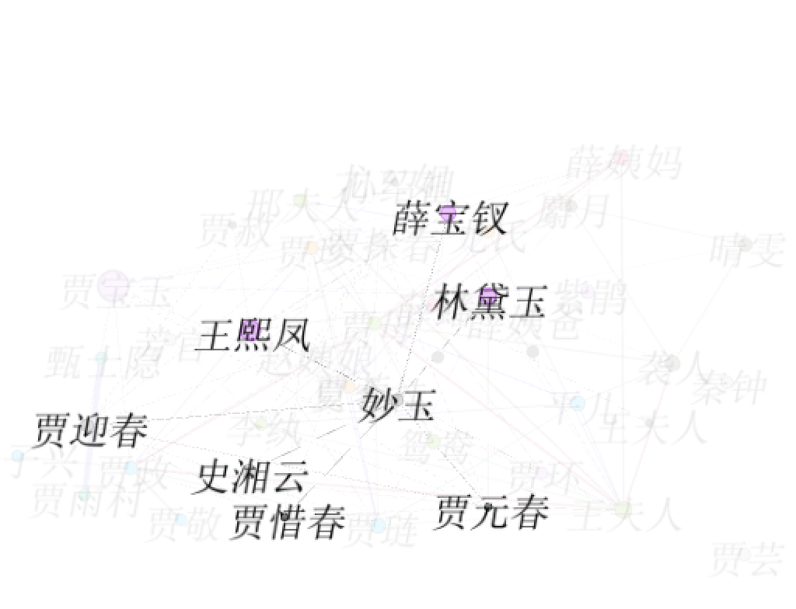

妙玉，苏州人士，是一个带发修行的居士。她原是仕宦人家的小姐，自小在玄墓蟠香寺出家为尼。贾府建造大观园，妙玉入住栊翠庵。她在贾母、王夫人面前从容自若，不卑不亢；在大观园的日子里，她与贾宝玉、黛玉、宝钗、湘云、贾惜春、邢岫烟结下友谊；她美丽聪颖，心性高洁，却遭人嫉恨，举世难容；她是佛家弟子，文学上却大爱庄子，感情上又尘缘未了，不洁不空；她才华馥郁，品位高雅，栊翠庵品茶，刻画她茶艺精湛，中秋夜联诗，塑造她为“红楼诗仙”。宝玉丢失通灵宝玉，岫烟请妙玉扶乩。贾母病危，妙玉不请自来，探望病情。贾母出殡次日，妙玉被贼人掳走，宝玉悲伤叹惋。再后来，贾府传闻她在海边遇害。


